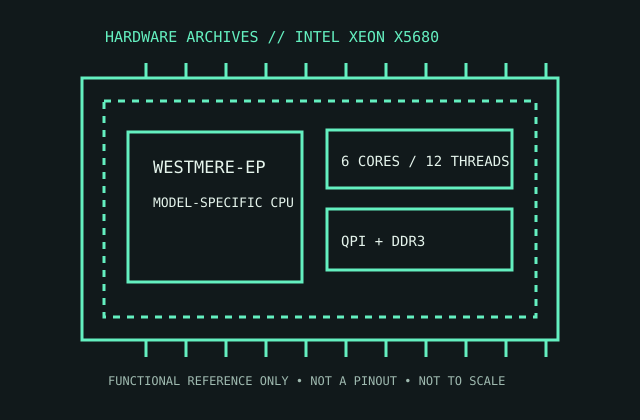

[ SERVER AND WORKSTATION PROCESSORS // IDENTIFIED PROCESSOR ]
Intel Xeon X5680
The Westmere-EP Xeon X5680 is a six-core server/workstation processor for LGA1366 systems, featuring three-channel DDR3 and QPI links.

MODEL IDENTIFICATION: Intel Xeon X5680. Compare the printed part number, speed grade, package, cache configuration, and stepping with the cited documentation; do not transfer one variant’s limits to another.
Recorded specifications
| Cataloged part | Intel Xeon X5680 |
|---|---|
| Era / family | Intel Xeon 5600 series / Westmere-EP, 2010; X5680 3.33 GHz SKU. |
| Key specifications | 6 cores / 12 threads; 3.33 GHz base, up to 3.60 GHz Turbo; 12 MB shared L3; 130 W TDP; LGA1366; 6.4 GT/s QPI; triple-channel DDR3-800/1066/1333 with ECC platform support. |
| Interface / fit | Requires server/workstation LGA1366 board and BIOS supporting Westmere-EP/X5680. Two-socket operation depends on the motherboard/firmware; verify heatsink, VRM, memory topology, and board CPU list. |
| Variant distinction | X5680 is a 6-core 130 W SKU distinct from the 4-core X5677 and lower-frequency models. Its LGA1366 package is not a plug-in guarantee for every X58 desktop board. |
Compatibility and variants
- Requires server/workstation LGA1366 board and BIOS supporting Westmere-EP/X5680. Two-socket operation depends on the motherboard/firmware; verify heatsink, VRM, memory topology, and board CPU list.
- X5680 is a 6-core 130 W SKU distinct from the 4-core X5677 and lower-frequency models. Its LGA1366 package is not a plug-in guarantee for every X58 desktop board.
- Confirm the system manufacturer’s exact processor support list, firmware minimum, board revision, power/thermal envelope, and memory requirements before installation.
Service and archival notes
Record board model/revision, CPU sSpec, BIOS, DIMM population, and fan/chassis configuration. Confirm thermal design accommodates 130 W and inspect socket pins before installation.
Preserve provenance and a record of the exact marking, condition, tested board/platform, firmware, cooling, memory configuration, and test conditions. Separate published specification limits from observations made on a particular surviving system.
Sources & further reading
- Intel ARK — Xeon X5680 model specificationsSpecific model or manufacturer-family reference; verify revision and configuration against the device marking and platform documentation.
- Intel Xeon Processor 5600 Series Datasheet — Westmere-EP package, memory and QPISpecific model or manufacturer-family reference; verify revision and configuration against the device marking and platform documentation.
- Intel Xeon 5600 series launch history — Intel newsroomSpecific model or manufacturer-family reference; verify revision and configuration against the device marking and platform documentation.
Third-party reference pages and document archives are finding aids. The matching manufacturer datasheet, product specification, and board support documentation take precedence for the exact revision and host.